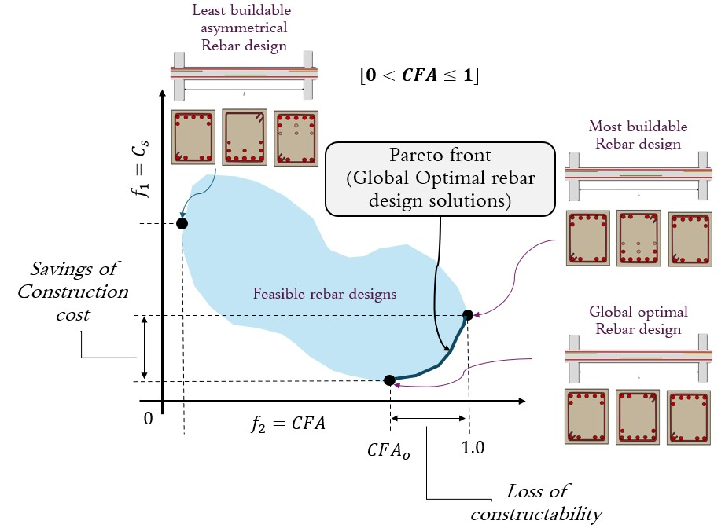

Surrogate-Assisted Constructability-based Multi-objective Optimization design of rebar for Reinforced Concrete Structres with Evolutionary Algorithms
- The deployment of multi-objective optimization is key when working with Generative Design through BIM-based environments. For this purpose, the use of surrogate models is a preponderant factor to minimize time execution demands for larger and complex structural systems. In this area, constructability-based optimization design of rebar in RC structures remains an unexplored study.
Maintanance and development of CALRECOD and CAL-software
- As the creator of CALRECOD it is my resposibility to keep on developing new functions for further versions of CALRECOD. At this point new functionalities for the optimal design of hollow concrete columns are being developed as well as for the design of prestressed concrete girders.